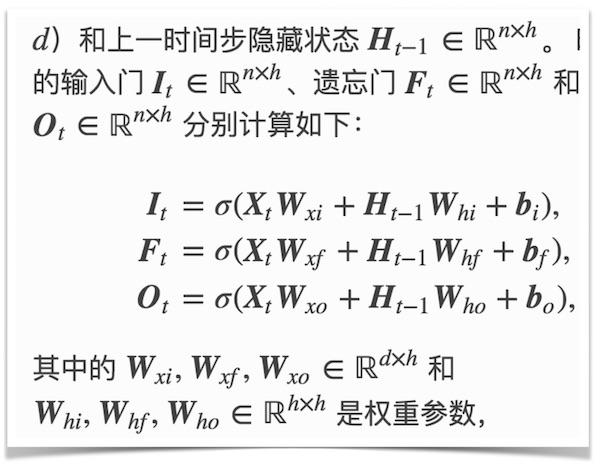
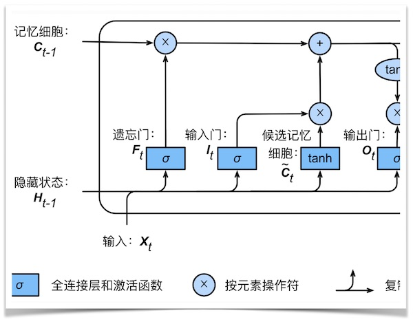
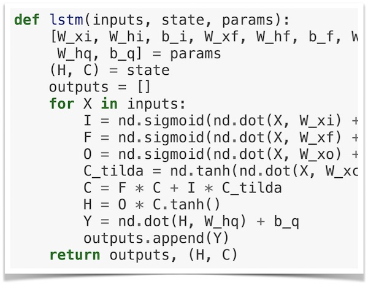

动手学深度学习（Dive into Deep Learning，D2L）
理解深度学习的最佳方法是学以致用。




本开源项目代表了我们的一种尝试：我们将教给读者概念、背景知识和代码；我们将在同一个地方阐述剖析问题所需的批判性思维、解决问题所需的数学知识，以及实现解决方案所需的工程技能。
我们的目标是创建一个为实现以下目标的统一资源： 1. 所有人均可在网上免费获取； 1. 提供足够的技术深度，从而帮助读者实际成为深度学习应用科学家：既理解数学原理，又能够实现并不断改进方法； 1. 包含可运行的代码，为读者展示如何在实际中解决问题。这样不仅直接将数学公式对应成实际代码，而且可以修改代码、观察结果并及时获取经验； 1. 允许我们和整个社区不断快速迭代内容，从而紧跟仍在高速发展的深度学习领域； 1. 由包含有关技术细节问答的论坛作为补充，使大家可以相互答疑并交换经验。
将本书（中英文版）用作教材或参考书的大学

如果本书对你有帮助，请Star (★) 本仓库或引用本书的英文版：
@book{zhang2020dive,
title={Dive into Deep Learning},
author={Aston Zhang and Zachary C. Lipton and Mu Li and Alexander J. Smola},
note={\url{https://d2l.ai}},
year={2020}
}
本书的第二版
虽然纸质书第一版已经出版，但深度学习领域依然在迅速发展。为了得到来自更广泛的英文开源社区的帮助，从而提升本书质量，本书的第二版正在用英文写。当英文版完成并改进后，我们再把它搬回中文版。
目前，英文版已超过160节（中文版共96节），例如增加了理论背景（如优化收敛分析）、硬件设计（如参数服务器）、全新篇章（如注意力机制、推荐系统、深度学习的数学、生成对抗网络）、应用种类（如自然语言推理）、模型种类（如Transformer、BERT）等，并优化重组了大量章节（如将自然语言处理篇章按从预训练表征、到模型设计、再到下游应用重构）。
欢迎关注本书第二版的英文开源项目。
中英文教学资源
加州大学伯克利分校 2019 年春学期 Introduction to Deep Learning 课程教材（同时提供含教学视频地址的中文版课件）。
学术界推荐
"Dive into this book if you want to dive into deep learning!"
— 韩家炜，ACM 院士、IEEE 院士，美国伊利诺伊大学香槟分校计算机系 Michael Aiken Chair 教授"This is a highly welcome addition to the machine learning literature."
— Bernhard Schölkopf，ACM 院士、德国国家科学院院士，德国马克斯•普朗克研究所智能系统院院长"书中代码可谓‘所学即所用’。"
— 周志华，ACM 院士、IEEE 院士、AAAS 院士，南京大学计算机科学与技术系主任"这本书可以帮助深度学习实践者快速提升自己的能力。"
— 张潼，ASA 院士、IMS 院士，香港科技大学计算机系和数学系教授
工业界推荐
"一本优秀的深度学习教材，值得任何想了解深度学习何以引爆人工智能革命的人关注。"
— 黄仁勋，NVIDIA创始人 & CEO"《动手学深度学习》是最适合工业界研发工程师学习的。我毫无保留地向广大的读者们强烈推荐。"
— 余凯，地平线公司创始人 & CEO"强烈推荐这本书！我特别赞赏这种手脑一体的学习方式。"
— 漆远，蚂蚁金服副总裁、首席AI科学家"《动手学深度学习》是一本很容易让学习者上瘾的书。"
— 沈强，将门创投创始合伙人
贡献
感谢社区贡献者们为每一位读者改进这本开源书。